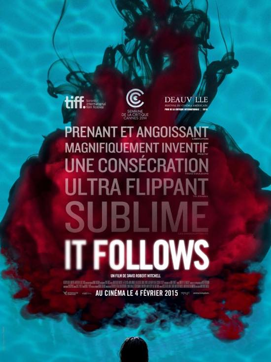
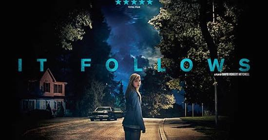

마음에 드는 포스터 두장
부정기적으로 돌아오는 최근 본 영화 시리즈 ^^
주말저녁은 역시 빤스바람에 방만한 자세로 영화감상이 최고죠// (초콜렛 까묵으면서 ㅋㅋ)
지인의 추천으로 보게된 It Follows 입니다.
아이디어가 무척 신선해서 맘에듭니다.
공포영화 금기를 살짝 비틀어서 써먹은것도 재미있고
대낮에 사방이 오픈되어 있는 장소에서도 무섭다는 느낌을 주는게 훈늉합니다.
게다가 끝이없이 돌고도는 저주라는게 더 슬프네욤
인터넷에서 후기찾아보니까 누군가 '트라우마'에 관한 이야기라고 하는데
설득당했습니다 ㅋㅋㅋ
오랜만에 맘에드는 공포영화 봐서 뿌듯하네요 :)
영화정보: